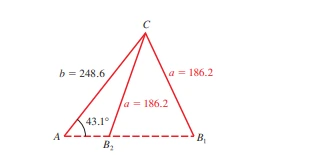

Definición y Conceptos
La Ley de Senos establece una relación entre los ángulos y los lados de cualquier triángulo, sea este acutángulo, rectángulo u obtusángulo. Es particularmente útil para resolver triángulos oblicuos, aquellos que no contienen un ángulo recto.
La Ley de Senos afirma que la relación entre un lado de un triángulo y el seno de su ángulo opuesto es constante para los tres lados y ángulos del triángulo. Es decir, si un triángulo tiene lados \( a \), \( b \), \( c \) y ángulos opuestos \( A \), \( B \), \( C \), respectivamente, la Ley de Senos se expresa como:
\[ \frac{a}{\sin(A)} = \frac{b}{\sin(B)} = \frac{c}{\sin(C)} \]
Esta ley es útil cuando conocemos dos ángulos y un lado, o dos lados y un ángulo no incluido (caso AAS o SSA).
Fórmulas y Teoremas
Fórmula de la Ley de Senos
\[ \frac{a}{\sin(A)} = \frac{b}{\sin(B)} = \frac{c}{\sin(C)} \]
Área de un Triángulo usando la Ley de Senos
El área de un triángulo puede calcularse usando la fórmula:
\[ \text{Área} = \frac{1}{2}ab\sin(C) \]
Esta fórmula es útil cuando se conocen dos lados y el ángulo entre ellos.
Teorema del Ángulo Ambiguo
En el caso SSA, es posible que existan dos soluciones, una solución, o ninguna, dependiendo de los valores de los lados y los ángulos.

Ejemplo
Ejemplo: Encontrar el Lado \( b \)
Dado un triángulo con \( A = 40^\circ \), \( B = 60^\circ \) y el lado \( a = 10 \), encuentra el lado \( b \).
Primero encontramos el ángulo \( C \): \[ C = 180^\circ - 40^\circ - 60^\circ = 80^\circ \]
Aplicamos la Ley de Senos: \[ \frac{a}{\sin(A)} = \frac{b}{\sin(B)} \quad \Rightarrow \quad \frac{10}{\sin(40^\circ)} = \frac{b}{\sin(60^\circ)} \]
Resolviendo para \( b \): \[ b = \frac{10 \cdot \sin(60^\circ)}{\sin(40^\circ)} = 13.56 \]